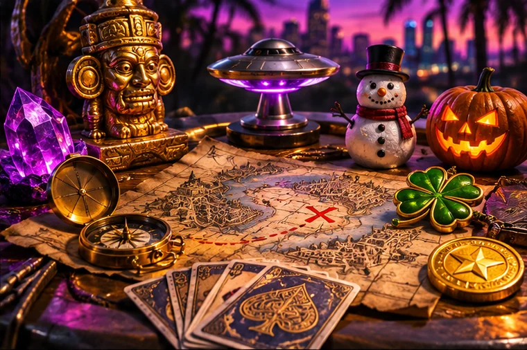

THE WHOLE GTA UNIVERSE · ONE PERSONAL JOURNEYYOUR WORLD.
YOUR WORLD.
YOUR ATLAS.
Find the next collectible, mark what you've completed, build hunts, explore maps and plan your next heist.
Quick access hub
◎Mapped Story CollectiblesExact community-mapped pins + routes◈GTA V MapLayers · Markers · Navigation▣GTA Online MapLocations · Live world features▶One Last RideTeam Jura's cinematic universe
Collection locations are shown only when backed by an identified source. Your progress, notes and hunt queue stay on this device and are not synced to Rockstar Games.
Know what you're collecting.
Not just anonymous numbered checkboxes: a source-linked tracker, personal clues, a hunt queue and a direct route into existing map records.
COLLECTION
Loading collection database…
0%0 / 0
Restore adds completed and queued items and fills missing notes without erasing existing progress. Story and Online item keys remain separate.
No items match these filters.
Pick your world.
Open the right interactive map and keep Story, Online, VI, Cayo and classic progress separate. Each map retains its credited sources and verified/provisional distinctions.
 GTA V · StorySourced Story collectibles, map layers and saved routesOpen workspace ›
GTA V · StorySourced Story collectibles, map layers and saved routesOpen workspace › GTA OnlineSeparate Online events, collections and world toolsOpen workspace ›GTA VI · LeonidaInteractive VI world · official poster · provisional researchOpen workspace ›
GTA OnlineSeparate Online events, collections and world toolsOpen workspace ›GTA VI · LeonidaInteractive VI world · official poster · provisional researchOpen workspace › Cayo PericoDedicated heist map · clickable markers and route planningOpen workspace ›
Cayo PericoDedicated heist map · clickable markers and route planningOpen workspace › GTA IV · Liberty CityEpisode-specific birds, routes and personal progressOpen workspace ›
GTA IV · Liberty CityEpisode-specific birds, routes and personal progressOpen workspace ›
Story Collection RoutesCommunity positioned Story pins and your hunt queueOpen workspace ›The Cayo heist uses its dedicated island map and mission objectives. GTA VI community coordinates remain provisional until validated against gameplay.
Heist HQ.
Fifteen distinct heists with their own cinematic artwork, saved checklists and operation-specific workspaces—not a generic GTA V map.
Heist payout and location details require ongoing individual verification. The existing workspaces remain the source of current features.
Activity intelligence.
Keep live rotations, prerequisites and community-reported possibilities separate.
Activity IntelligenceGTA V · Online · Leonida categories ↗Verification CenterConfidence labels and data caveats ↗Research DeskInvestigate source claims ↗Marker CoverageCoverage and gaps by source ↗
Do not mistake possible spawn points for today's confirmed live position. This preview does not independently update Rockstar events.
Your Atlas Passport.
Return to the existing 11-world passport and its progress tracking. We're keeping this separate from collection-specific verification.
Database & Toolkit.
Universe DatabaseDataset fields · coverage ↗Cheat SheetSingle-player · cross-checked ↗Rockstar NewsroomOfficial posts · dated ↗Tools & UtilitiesCoordinate finder and related tools ↗Feature AuditExisting feature coverage ↗Source VerificationAccuracy status ↗Credits & LicensesOpen data, artwork and attribution ↗Test CenterExisting repository test dashboard ↗